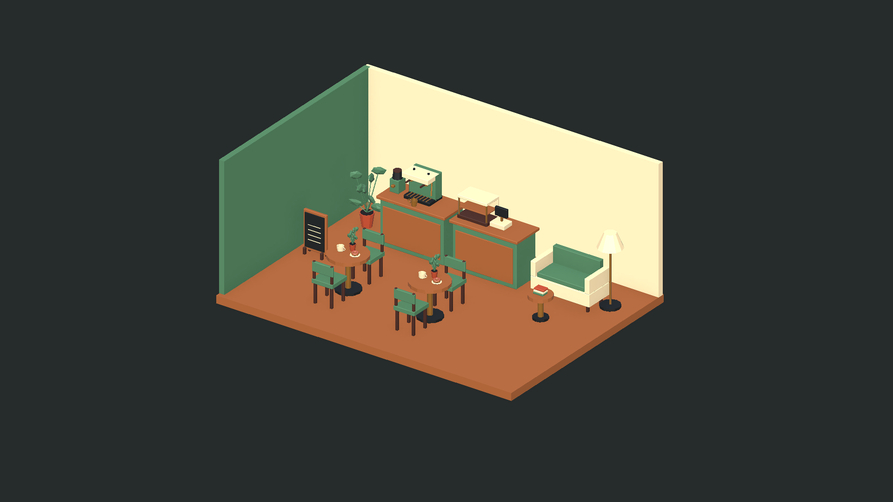
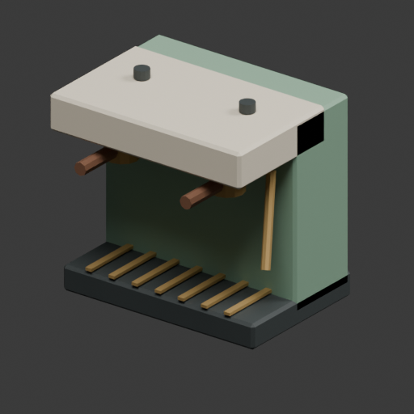
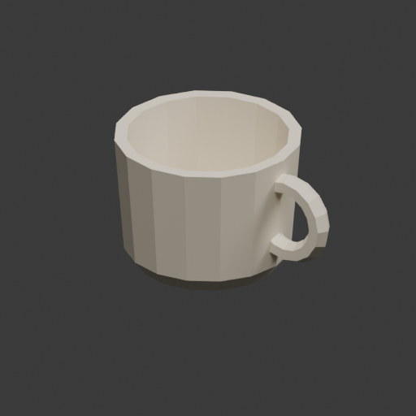
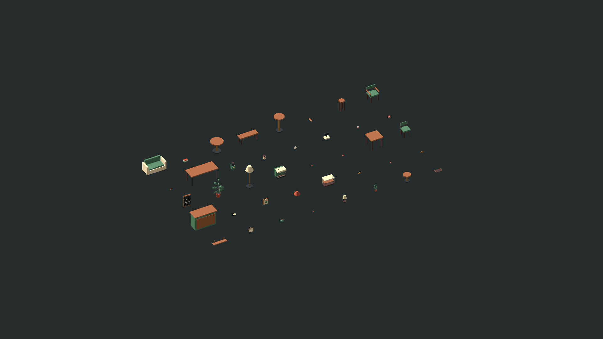

Original assets for cozy worlds
Small details.
Warm places.
Low-poly game props with a shared palette of oak, walnut, sage and cream. Made for cafés you want to spend time in.
Explore Cozy Café ↗First collection · In preparation for Unity Asset Store review
Collection No. 01
Cozy Café Props
Low polyUnity URPStatic meshesBuild a neighborhood coffee stop, a café tycoon or a quiet corner in a life simulation. Reusable prefabs and named materials make arranging and recoloring the collection straightforward.
Version 0.1.1 · Planned price: US$19.
The product is not yet approved or available for purchase. Store links will be added after publication.


10 furniture
Five tables, dining chair, armchair, backless stool, bench and café sofa.
8 equipment
Espresso machine, grinder, register, counter, pastry shelf, pitcher, canister and tray.
10 food & drink
Mug, espresso cup, takeaway cup, saucer, donut, muffin, cake, baguette, teapot and cookie.
12 decorations
Three lamps, two plants, menu board, shelf, clock, frame, candle, books and napkin holder.

Technical notes
Built to be placed.
Tested to be useful.
| Verified engine | Unity 6000.6.7f1 · Universal Render Pipeline 17.6.0 |
|---|---|
| Verified runtime | Windows x64 · Mono · Direct3D11 · Both demo scenes tested |
| Unity content | 40 prefabs, 10 flat-color materials, Overview and CafeUseScene scenes |
| Textures & UVs | No image textures required. UV0 mapping with automated overlap, bounds and degeneracy checks. Generated lightmap UVs. |
| Scale & collision | Meter-based dimensions. 40 static MeshColliders passed Editor raycast checks. |
| Not included | Rigging, animation, LODs, gameplay, liquid simulation and interactive equipment. Menu-board marks are decorative geometry. |
| Other platforms | Built-in, HDRP, Custom RP, Unreal Engine, mobile and other desktop targets remain untested. |
Product help
Keep creating.
We’ll help with the props.
For compatibility questions or reproducible file issues, contact the studio using the customer-support address listed on our Unity publisher profile. Include the asset version, Unity version, render pipeline and steps to reproduce.
Unity publisher profile ↗Updates & licensing
Updates focus on reproducible file defects in supported versions. Version notes and compatibility retests accompany changes. Existing asset names and pivots will be preserved where practical. No release date or lifetime content expansion is promised.
When published on Unity Asset Store, purchases are governed by the applicable Unity Asset Store license. This website does not sell or grant a license to the preview images or models.
About the studio
Hearth & Sage creates original low-poly game props with coordinated colors, readable names and reusable scene components. Cozy Café is the first collection in development.